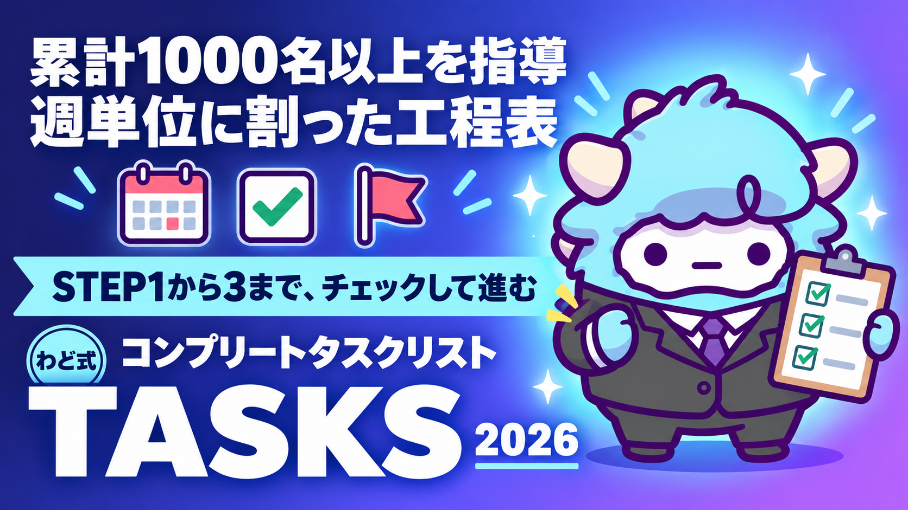

AIマネタイズ コンプリートタスクリスト
STEP1→2→3 を週単位に割った、チェックして進める工程表
このページが特典の本体です。下へスクロールして使ってくださいAIマネタイズ コンプリートタスクリスト
12週間、迷わず「今週やること」だけを見て手を動かせるようになります。
はじめに
AIで副業を始めようとすると、最初にぶつかる壁は「何から手をつけるか」です。発信から始める人もいれば、講座作りから始める人もいます。でも、順番を間違えると、時間だけが減っていきます。
わどは、AIで収益を上げるには登る順番があると考えています。
- STEP1 最初の1件（クライアントワークで0→1）
- STEP2 その経験を、自分のコンテンツにする
- STEP3 SNSとローンチで、売れる規模を上げる
最初の1件が、あなたの最初のコンテンツの元ネタになります。だから、STEP1を飛ばしてSTEP3から始めても、話す中身がないまま発信することになります。
この特典は、この3STEPを12週間・週単位のタスクに割った工程表です。各週に5〜8個のチェック項目があり、上から順に埋めていけば、抜け漏れなく次の週に進めます。それぞれの項目には「何をもって完了とするか」の基準を添えています。「なんとなくやった」ではなく、チェックを入れられる状態まで終わらせてから次に進んでください。
この特典の進め方
- このページ自体が特典の本体です。ブックマークして、週が変わるたびに開いてください
- Notionに複製すると、チェックボックスをクリックで管理できます（手順は後述）
- 1週間に使える時間は人によって違います。本業がある方は週3〜5時間、副業に多めに時間を割ける方は週10時間以上を目安に、この粒度のタスクを組んでいます
- 時間が足りない週は、チェック項目を翌週に繰り越してかまいません。大事なのは、STEPの順番を飛ばさないことです
- 12週間で終わらなくても失敗ではありません。途中で止まったら「よくある失敗7つと直し方」を先に読んでください
最初のゴール（今日やる1つ）
今日はこれだけをやってください。
- [ ] 「AIに任せられる仕事」を3つ、自分の言葉で書き出す（例: 文章の下書き、リサーチ、資料の整形、画像の準備など）
書き出せたら、STEP1の週1に進みます。まだ何を任せられるか分からない場合は、「最初に投げるプロンプト」を使って、AIと一緒に洗い出してください。
12週間の全体像（見取り図）
| STEP | 週 | テーマ | この段階のゴール |
|---|---|---|---|
| STEP1 | 週1〜4 | 最初の1件をつくる | クライアントワークで0→1。月10万円規模の柱を1本立てる |
| STEP2 | 週5〜8 | 経験を自分のコンテンツにする | 「人の仕事」を「自分の商品」に移し替える |
| STEP3 | 週9〜12 | SNSとローンチで規模を上げる | 届く人数を増やし、単発の売上を繰り返せる売上に変える |
この段階のゴールに書いていないことは、今のあなたには不要な作業です。STEP1にいる間はSNSのフォロワー数を気にしなくていいですし、STEP3にいる間は新しいスキルの勉強を増やさなくて大丈夫です。今いる段階の項目だけに集中してください。
STEP1 週1〜4のタスク（最初の1件をつくる）
週1: 棚卸しと市場理解
- [ ] AIに任せられる自分のスキル・経験を5つ以上書き出した
- [ ] その中から「今すぐ人に頼まれても対応できるもの」を1つ選んだ
- [ ] その分野を必要としている人（個人・小さな会社）を3パターン思い浮かべた
- [ ] その人たちが今、何に困っていて、何を諦めているかを書き出した
- [ ] 同じ分野で活動している人を5人見つけ、価格帯・提供形態をメモした
完了の基準: 「誰の・どんな悩みに・自分の何を使って応えるか」を1文で言えること。
週2: 提供できるものの設計
- [ ] 提供する内容を1文で定義した（誰の・どんな状態を・どこまで変えるか）
- [ ] 自分がその仕事をできる理由を言語化した（経験・実績・強み）
- [ ] 提供物の中身を決めた（作業内容・納期・やり取りの回数・修正の範囲）
- [ ] 最初の1件は「実績づくり」と割り切り、無理のない範囲で条件を決めた
- [ ] 断る条件（対応できない依頼の線引き）も先に決めた
完了の基準: 初めて会う人に、30秒で説明できる状態になっていること。
週3: 出品・営業導線を作る
- [ ] 自分の提供内容を紹介するプロフィール文を作った
- [ ] 実績が少ない場合は「模擬案件」や「無償トライアル1件」を用意した
- [ ] 依頼を受け取る窓口を1つ決めた（フォーム・DM・紹介経由など）
- [ ] 依頼から納品までの流れを、自分で一度シミュレーションした
- [ ] 声をかける相手のリストを10件以上作った
完了の基準: 「今日、誰に何を送るか」が具体的に決まっていること。
週4: 最初の1件を受注する
- [ ] リストの相手に、実際に連絡を送った
- [ ] 返信が来たら、ヒアリングの場を設定した
- [ ] 提供内容・納期・条件をすり合わせて合意した
- [ ] 合意内容を文章で残した（口頭だけで終わらせない）
- [ ] 作業を開始し、途中経過を1回以上共有した
完了の基準: 「誰かのために、実際に手を動かしている」状態になっていること。1件で終わらせず、STEP2に進みながら次の依頼も並行して探してください。
STEP2 週5〜8のタスク（経験を自分のコンテンツにする）
週5: 実績の棚卸しとコンテンツ化準備
- [ ] STEP1で得た経験を振り返り、うまくいった点・つまずいた点を書き出した
- [ ] 依頼の中で繰り返し聞かれた質問・悩みをメモした
- [ ] 「自分にしか話せないこと」を3つ言語化した
- [ ] 実績として紹介できる内容を、相手の許可を取ってから整理した
- [ ] 今後どんな形でコンテンツにするか(記事・講座・サポートなど)の方向性を決めた
完了の基準: 「自分の経験を、他の誰かの悩み解決に変換した1文」が書けること。
週6: 発信の型を作る
- [ ] 発信の中心となるコアメッセージを3つに整理した
- [ ] 各コアメッセージを5つの型に展開した（観察・逆説・リスト・ストーリー・対比）
- [ ] 投稿する媒体を1つ決めた（すべてに手を広げない）
- [ ] 投稿の頻度を、自分が続けられるペースで決めた
- [ ] 最初の5投稿分の下書きを作った
完了の基準: 「今日発信するなら何を書くか」に毎回迷わなくなっていること。
週7: 有料コンテンツの設計
- [ ] 提供する形式を決めた（有料記事・講座・個別サポートなど）
- [ ] 対象者と、対象者が今困っていることを言語化した
- [ ] 提供する内容の目次・カリキュラムを箇条書きで作った
- [ ] サポートの範囲(質問対応の有無・回数など)を決めた
- [ ] 一連の流れを、身近な人に説明してフィードバックをもらった
完了の基準: 「これを買うと何が変わるか」を一言で説明できること。
週8: 販売ページの骨格を作る
以下の9要素を、箇条書きでいいので埋めてください。
- [ ] 1. 対象の明確化(誰に向けてか)
- [ ] 2. 現状の痛み(今の困りごと)
- [ ] 3. これまでの考え方との違い(新しい視点の提示)
- [ ] 4. 解決の鍵(自分の方法・強み)
- [ ] 5. 提供内容(得られるもの)
- [ ] 6. 証拠(実績・事例・プロセス)
- [ ] 7. 不安の先回り(よくある質問への回答)
- [ ] 8. 条件(内容・期間・サポート範囲)
- [ ] 9. 今やること1つ(次の行動)
完了の基準: 9項目すべてが、空欄なく一文以上で埋まっていること。
STEP3 週9〜12のタスク（SNSとローンチで規模を上げる）
週9: 予告フェーズ
- [ ] 需要を確かめる投稿を、複数の切り口で出した
- [ ] 「〇〇ごろ、新しいことを考えています」と、日程だけ先に伝えた
- [ ] 制作の裏側・準備の様子を発信した
- [ ] 売り込みは一切せず、興味だけを集める投稿にとどめた
- [ ] 募集開始日・締切日をカレンダーに確定させた
STEP3では日程管理が要です。「つまずいたときに聞くプロンプト」の下にある逆算カレンダーのプロンプトを、このタイミングで使ってください。
週10: 教育フェーズ
- [ ] 「理想の状態」と「今の状態」のギャップを埋める投稿を続けた
- [ ] 自己流でうまくいかない理由を伝えた
- [ ] 実績・事例・プロセスなどの証拠を投下した
- [ ] 企画の存在を匂わせ、日程を覚えてもらうよう伝えた
- [ ] よくある質問を先回りしてまとめておいた
完了の基準: フォロワーや読者が「何かが始まりそうだ」と認識していること。
週11: 募集・ローンチ本番
- [ ] 募集開始日に、提供内容と条件の全体像を打ち出した
- [ ] 中盤で、よくある質問・不安への回答・証拠・利用者の声を出した
- [ ] 終盤で、締切と「今動かないと先延ばしになること」を伝えた
- [ ] 入口から申込・決済までの導線を、自分で実際にクリックして確認した
- [ ] 途中で選択肢が分岐せず、次の行動が常に1つになっていることを確認した
完了の基準: 誰かに手順を説明せずに、自分だけで最初から最後まで導線をたどれること。
週12: 締め・フォロー・振り返り
- [ ] 申し込んでくれた人へ、感謝と次の案内を送った
- [ ] 提供(オンボーディング)を始め、最初の一歩をサポートした
- [ ] 結果の数字(申込数・反応)を記録した
- [ ] うまくいった点・つまずいた点を書き出した
- [ ] 次の12週間で改善することを1つ決めた
完了の基準: 「次にやるなら、どこを変えるか」が1つに絞られていること。この振り返りが、2周目の12週間をより速く走るための燃料になります。
Notionでチェックリストにする手順
このページのチェック項目を、Notionで管理できる形にする手順です。
- Notionで新しいページを作り、タイトルを「AIマネタイズ 12週間タスクリスト」にする
- ページ内に「週1」〜「週12」のトグルリストを12個作る(見出し3を使うと目次に出て見やすくなります)
- 各トグルの中に、このページのチェック項目を「To-do リスト」ブロックとしてコピーする(行頭の
- [ ]はそのまま貼り付けるとチェックボックスとして認識されます) - ページ上部にステータス用のプロパティを追加する場合は、データベース化して「ステータス」列(未着手・進行中・完了)を作ると進捗が一目で分かります
- 週が変わったら、その週のトグルを開いて上から順にチェックを入れていく
- 12週分すべてを埋め終えたら、週12の振り返り項目をもとに、次の12週間分のページを複製して2周目を始める
NotebookLMを使う場合は、このページ全文をソースとして読み込ませておくと、週ごとの内容についてそのまま質問できます。
最初に投げるプロンプト
STEP1の週1を始める前に、AI(ChatGPT・Gemini・Claudeのどれでも構いません)にこのプロンプトを投げてください。自分の現在地と、今週やることが具体的になります。
あなたはAIマネタイズのコーチです。
私がこれから「AIマネタイズ コンプリートタスクリスト」というSTEP1〜STEP3・12週間の工程表に沿って進めます。
私について:
- 今持っているスキル・経験:【自由に書く】
- 使える時間:【例: 平日1時間、週末3時間】
- AIで収益を上げた経験:【例: まったくの未経験／少し触ったことがある】
やってほしいこと:
1. 私の情報をもとに、STEP1週1の「棚卸しと市場理解」のうち、
最初に手をつけるべき項目を1つ選んで理由を説明してください
2. その項目を終わらせるための具体的な質問を、3つ私に投げてください
(質問に答えていく中で、項目が自然と完了する形にしてください)
3. 私が答えたら、その内容を1文にまとめて、
「誰の・どんな悩みに・自分の何を使って応えるか」という形に整えてください
## 制約
- 断定的な収入の予測はしないでください
- 私が書いていない実績・経験を勝手に作らないでください
- 分からないことは「分かりません」と答えてください
よくある失敗 7つと直し方
-
順番を飛ばして発信から始める 直し方: STEP1の週1に戻り、最初の1件を先に作ります。発信の中身は、STEP1の経験から生まれます。
-
市場・顧客理解をせずに提供物を決める 直し方: 週1の「相手が何に困っていて、何を諦めているか」を書き出すまで、提供物の設計に進みません。
-
発信を始めるが、コアメッセージが定まっていない 直し方: 週6に戻り、コアメッセージを3つに絞ってから投稿を再開します。
-
入口から決済までの導線を自分で確認しない 直し方: 週11のチェック項目どおり、実際に自分でクリックして、途中で迷う箇所がないか確認します。
-
限定性(締切・条件)を入れずに募集する 直し方: 週11で締切日を明確にし、「今動かないと先延ばしになること」を1文で書き添えます。
-
振り返りをせず、次のローンチや発信に進む 直し方: 週12の振り返り項目を、次に進む前に必ず埋めます。数字と気づきを記録に残します。
-
時間が足りず、STEPを丸ごと飛ばす 直し方: 飛ばすのではなく、チェック項目を翌週に繰り越します。1週間の項目数を減らしてでも、STEPの順番は守ります。
安全に使うための注意
- この工程表は、成果や収入を保証するものではありません。進め方の目安として使ってください
- クライアントや依頼者の個人情報・機密情報は、AIツールに貼り付けないでください
- 実績や声を紹介する際は、必ず本人の許可を取ってから公開してください
- 発信や販売ページの文章は、誇張表現(断定的な収入表現、根拠のない「誰でも」等)を避けてください
- 副業の内容によっては、確定申告や利用規約上の届け出が必要になる場合があります。不明な点は専門家(税理士など)に確認してください
- AIが出力した内容は、事実確認をしてから使ってください。特に実績や数字に関わる部分は自分で裏を取ります
つまずいたときに聞くプロンプト
今週のタスクが終わらない、何から手をつけていいか分からない、というときに使ってください。
私は「AIマネタイズ コンプリートタスクリスト」の週【何週目か】で止まっています。
状況:
- 今のSTEP・週:【例: STEP2 週6】
- 終わっていない項目:【チェックが付いていない項目をそのまま貼る】
- 止まっている理由:【時間がない／何を書けばいいか分からない／自信がない、など】
やってほしいこと:
1. 止まっている理由をふまえて、今週のタスクを
「今日30分でできる小さな一歩」に分解してください
2. その一歩を終えたら、次に何をすればいいか1つだけ提示してください
3. 今週すべてを終わらせなくても大丈夫な場合は、
来週に繰り越してよい項目を教えてください
日程そのものを組み立てたいときは、次のプロンプトを使います(STEP3の週9で使うものと同じです)。
上のローンチ設計図(または販売開始日)をもとに、実行カレンダーを作ってください。
## 前提
- 販売・締切の日:【例: 9/30(月)23:59、未定なら「2週間後」と書く】
- 私が1日に使える作業時間:【例: 平日1時間】
## やってほしいこと
締切日から逆算して、次を1つの表にまとめてください。
列: 日付 / 曜日 / やること / 所要時間の目安
含める工程:
- 発信の準備 → 発信開始
- 予告投稿(開始の3〜5日前)
- 募集開始(SNS・メール等を同日にそろえる)
- 中間の追い配信(開始と締切の中間に1回)
- 締切24時間前の投稿・配信
- 締切当日の最終配信
- 締切翌日: 結果の記録(申込数・反応を記録に残す)
## ルール
- 1日の作業が、私の使える時間を超えないように配分してください
- 無理な日程なら、正直に「締切を延ばすべき」と言ってください
用語集
| 用語 | 意味 |
|---|---|
| 0→1 | まだ実績がない状態から、最初の1件・最初の成果を作ること |
| AI社員 | AIに特定の作業を任せ、繰り返し使える仕組みにしたもの |
| コアメッセージ | 発信の軸になる、繰り返し伝えたい主張 |
| 導線 | 見込み客が興味を持ってから申込・購入に至るまでの流れ |
| ティザー投稿 | 本題を明かさず、興味だけを引く予告的な投稿 |
| 限定性 | 期間・人数などに制限を設け、今行動する理由を作ること |
| CTA | 読者に取ってほしい次の行動を示す呼びかけ(登録する・申し込む等) |
| オンボーディング | 購入・契約後、相手が最初の一歩を踏み出せるように支援するプロセス |
| ローンチ | 商品・サービスを期間を区切って売り出す一連の活動 |
| 差別化 | 自分の提供物が、他と何によって選ばれるかを明確にすること |
出す前の品質チェック（10項目）
各週の終わりに、次の週へ進む前に確認してください。
- その週のチェック項目は、すべて「完了の基準」を満たしているか
- 曖昧なまま次に進もうとしている項目はないか
- 誰かに1分で説明できる状態になっているか
- 数字(件数・日付・時間)で決められることは、感覚ではなく数字で決めたか
- 相手(顧客・読者)の視点で見直したか(自分視点だけで終わっていないか)
- 誇張・断定的な表現(収入を保証するような言い方など)が入っていないか
- 個人情報・機密情報を扱う項目は、許可や配慮ができているか
- 記録として残すべき内容(合意事項・数字・気づき)を書き残したか
- 次の週に必要な情報が、今週の中で揃っているか
- 「今週、一番手を止めたのはどこか」を1つ言えるか
10項目のうち答えに詰まるものがあれば、次の週に進まず、その週のうちに解消してください。
最新AI（2026年9月時点）でこの特典はどう変わるか
この特典では: タスクの各行に「AI に任せる／自分でやる」を付けると、コンピュータ操作型の AI に渡せる行が増えたことが分かります。任せる行から順に、AI社員の指示書にしてください。
2026年9月の第1週に、主要な AI が続けて更新されました。この特典の手順は変わりませんが、次の3点を知っておくと手数が減ります（2026年9月6日時点の公開情報です。提供状況は変わるので、使う前に各社の公式サイトで確かめてください）。
- GPT-6 Astra（OpenAI・2026年9月3日発表）: 画面の情報を読み取り、アプリを人間と同じ画面経由で動かす「コンピュータ操作」が主機能になりました。フォーム入力・表計算・資料づくりのような「手順が決まっている作業」を任せやすくなります。ただし段階的な提供の途中で、自分のアカウントにまだ出ていないことがあります。画面に映った文章をそのまま指示として読むことがあるので、AI に画面を触らせるときは「映すものを選ぶ」を守ってください。
- Claude Fable 5.1（Anthropic・2026年9月1日発表）: 数時間から数日にわたる、複数アプリをまたぐ作業を最小限の監督で回すための最上位モデルです。この特典の作業は Sonnet／Opus で足ります。「何日もかかる仕事を丸ごと任せる」段階になってから検討してください。Claude Code の導入は特典「Claude Code 最初の30分」で扱っています。
- AI社員: 上の2つが向いている先は同じです。「毎回同じ指示を書かなくていい担当」を1人ずつ増やす形が、個人でも現実になりました。この特典のプロンプトやシステム指示は、そのまま AI社員の「指示書」の1枚になります。つくり方は特典「AI社員1人目のつくり方」で扱っています。
モデルの差で成果は決まりません。何に使うかで決まります。この特典の手順を1周してから、新しいモデルを試してください。
最終チェックリスト
12週間すべてを終えたら、最後にこの3点を自問してください。
- [ ] 提供内容・発信・販売ページが、一本の線でつながっているか
- [ ] 相手が「なぜ買うか」と「なぜ今買うか」の両方を受け取れる状態になっているか
- [ ] 売った後の提供・フォローまで、自分の中で設計できているか
3つすべてに「はい」と言えたら、あなたの12週間は目的を果たしています。あとは週12の振り返りをもとに、2周目のSTEP1へ進んでください。1周目より、確実に速く回せるはずです。